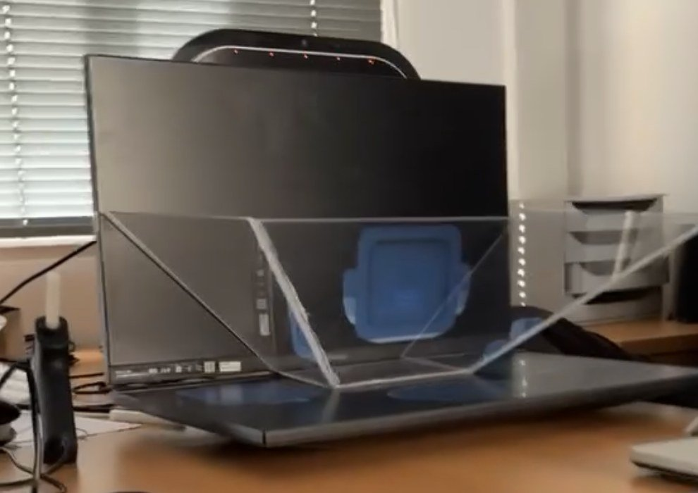

Case study · CNAM PACA
A holographic welcome agent, from need to installed prototype
Turning a “wow” ambition into a feasible scope, with €1,000 and 6 days of build time.
- Setting
- Multidisciplinary project, CNAM engineering degree
- Client
- CNAM PACA
- Period
- Late 2025 – January 2026
- Team
- 3 people for needs gathering and specifications, then 9 for delivery
- My role
- Needs analysis, writing the specifications, building the physical hologram
- Constraints
- €1,000 budget, 6 days of build time, a single power outlet, no sensitive data
Context
CNAM PACA wanted to modernize its reception area. The idea: a holographic assistant able to welcome visitors, answer their questions and guide them. The audience was very diverse: prospective students, people changing careers, business partners.
The problem
The client pictured a “wow” experience, with an AI that could understand anything. The budget was €1,000 and the deadline very short. The real work was turning this ambition into a feasible scope, and telling the client what was not feasible.
My approach
Understand the need
With my team, I analyzed the client's expectations, audiences and constraints. We ran a market and feasibility study to compare existing solutions.
Write the specifications
I documented the context, audiences and constraints, then five functions ranked by criticality. The specifications also cover performance criteria, GDPR compliance, risks and an MVP achievable in one month.
- Answer visitors' questions, the core of the value
- Detect presence automatically, for a self-running system
- Polish the design and staging, for credibility
- Offer extra content (videos, documents)
- Greet visitors out loud
Bring three teams together
Three groups had explored three approaches in parallel. Halfway through, we decided to merge into a single team of 9, organized by expertise: AI, 3D avatar and hardware.
Build the hologram
I designed and built the plexiglass pyramid that creates the 3D illusion. I started with a miniature mock-up, then a full-size one. An angle issue in the cutting was fixed using plexiglass offcuts.

Choices and pivots
Cloud services were not compatible with the 3D engine. We switched to a lightweight model hosted on site, which also solved the data question.
Retraining a model gave unreliable answers. We switched to a CNAM document base queried by the AI, with better results.
Results
What I learned
Clients sometimes ask for the impossible. A BA's job is to understand the real need and offer the solution that best meets it, within the constraints. I also learned that one team building on everyone's strengths goes further than three teams competing.
Ollioules escape game